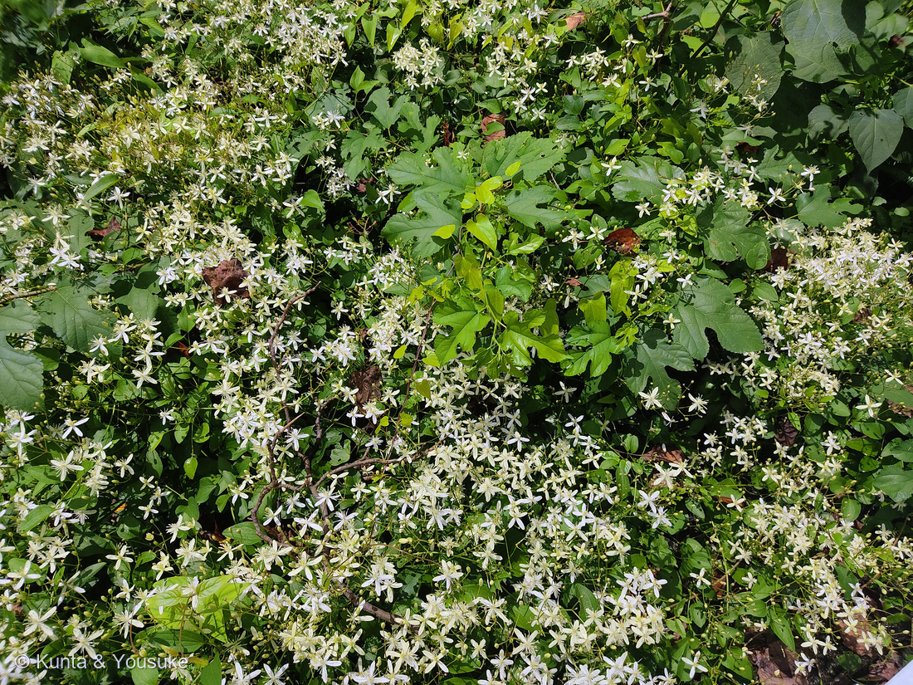

地図を読み込んでいるよ…
🔍 写真も地図も、押しているあいだ拡大して見られるよ（スマホは指を置いてすこし待ってね）。
🌍 の地図＝この子がもともと自生している場所を緑に。日本（北海道〜九州）・朝鮮半島・中国・台湾など、東アジアの温帯〜亜熱帯。POWOはロシア極東（アムール・ハバロフスク・沿海地方）まで自生範囲に含める。北アメリカへは1800年代後期に観賞用として持ちこまれ、東部の多くの州で野生化した（フロリダではカテゴリーIIの侵略的植物）。
⭐日本・朝鮮半島・中国・台湾の、東アジアの子だよ。⭐日本では北海道から九州まで、道ばたや林のふちにふつうにいる在来種。⚠POWOはロシア極東（アムール・ハバロフスク・沿海地方）も自生範囲に挙げているけれど、地図は国までしか塗れず、ロシア全体が緑になってしまうので塗らなかった（174 シロバナマンジュシャゲの済州島と同じ用心だよ）。⚠英語版Wikipediaは「モンゴル」も挙げているけれど、POWOが挙げるのは中国の内モンゴル自治区（地図では中国の一部）なので、モンゴル国は塗っていない。⭐⭐そして北アメリカは、原産ではないのに、いま増えている——1800年代後期に観賞用として持ちこまれ、東部の多くの州で野生化し、フロリダではカテゴリーIIの侵略的植物。⚠でもここは「もともとどこの子か」の地図だから、塗らないよ。
⚠ 地図は国（日本と中国だけ県・省）までしか塗れないから、ほんとうの分布より広く見えていることがあるよ。地図はだいたいの場所。正確なところは、上の文を見てね。
センニンソウ（仙人草）
Clematis terniflora DC.
別名 · ウマクワズ（馬食わず）／ウシノハコボレ（牛の歯こぼれ）／ウシクワズ／ウマノハオトシ ／ 英 · sweet autumn clematis, Japanese clematis ／ 見どころ · ⭐⭐白い十字は花びらじゃなく萼片4枚。そして「仙人」の名は、花ではなく実についた
キンポウゲ科 · Ranunculaceae（センニンソウ属 Clematis・キンポウゲ目 Ranunculales）── この図鑑でキンポウゲ科は4人目。014 ニゲラ・159 セリバオウレン・160 ニリンソウの親戚
燻太さんの言葉「センニンソウって名前らしいけど、花の数が尋常じゃないね。つる性なのかな、低木全体を覆っているようだね。」……⭐この2つの問いの答えは、どちらもこの子の学名と体のつくりに書いてあったよ（下の節に）。
名前と学名の由来 ── 名前は、花じゃなく実についた
- ⭐属名 Clematis（クレマチス）は、ギリシャ語の klema（クレーマ）＝「つる・若枝」から。つる植物であることが、そのまま属の名前になっているんだ。
- ⭐⭐種小名 terniflora（テルニフローラ）＝ラテン語の ternus（三つずつの）＋ flos（花）＝「三つずつ花をつける」。名づけたのは19世紀スイスの植物学者ドゥ・カンドール（Augustin Pyramus de Candolle）。──⭐この「三つ」は、下の「花の数」の節で効いてくるよ。
- ⭐⭐和名センニンソウ（仙人草）の由来は、花ではなく実。果実に残った花柱が約3cmに伸びて、銀白色の長い羽毛になる——⭐それを仙人のひげ、あるいは白髪に見立てたんだ。
- ⭐だからこの子は、花がいちばん目立つのに、名前は花からもらっていない。⚠ぼくらが見たのは花だけ＝つまり、まだ「仙人」に会っていない、ということになるね。
- ⚠別名は、こわいほうの顔から来ている＝ウマクワズ（馬食わず）／ウシノハコボレ（牛の歯こぼれ）／ウシクワズ／ウマノハオトシ。⭐どれも「牛や馬が食べない」という意味。理由は毒だよ（下の節へ）。
この植物のこと ── キンポウゲ科、4人目
- キンポウゲ科センニンソウ属の、つる性の半低木。⭐「草本のような木本つる性半低木植物。茎の基部は木質化する」〔三河〕＝草と木の、あいだの子なんだ。014 ニゲラ・159 セリバオウレン・160 ニリンソウにつづく、この図鑑で4人目のキンポウゲ科だよ。
- 花期は8〜9月〔三河〕（出典によっては7〜10月・8〜10月）。⭐この写真は8月21日——まん中の時期だね。
- 花は直径2〜3cmで、上を向いて全開する。雄しべは多数で長さ3〜7mm、雌しべは10個ほど〔三河〕。
- ⭐甘い香りを放つ〔植木ペディア〕。英名の sweet autumn clematis（甘い秋のクレマチス） も、この香りから。⚠ぼくらはまだ嗅いでいない＝宿題だよ。確かめられたら、🌬️ 香りでつながるの小道に入れる子だね。
- 実（痩果）は長さ6〜9mmの扁平な卵形で橙黄色。⭐そこに花柱が約3cmに伸びて残り、白色の長い羽根状の毛をつけて、風で飛んでいく〔三河〕。
- ⚠全体に毒がある。成分はプロトアネモニン（ほかにサポニン、ヘデラゲニン）。⚠汁が皮膚につくと発疱＝水ぶくれの皮膚炎、⚠誤って食べると胃腸炎を起こす〔東邦大学薬用植物園〕。
- ⭐でも、根は生薬になる＝「威霊仙（イレイセン）」「鉄脚威霊仙（テッキャクイレイセン）」。シナボタンヅルの代用として使われてきた〔東邦大学薬用植物園〕。⚠民間療法で扁桃腺炎に生葉を貼る使い方があるけれど、「5分以上は貼らないこと」と強く注意されている＝それだけ強いということ。
- ⭐園芸のクレマチスの台木として使われる〔Wikipedia〕。華やかな大輪のクレマチスの足もとで、この野生の子が根っこを引き受けているんだね。
- ⚠北アメリカでは、この子が困りものになっている。1800年代後期に観賞用として持ちこまれ、東部の多くの州に定着。フロリダではカテゴリーIIの侵略的植物に指定されている（invading native plant communities but is not yet seen as displacing native species）〔英語版Wikipedia〕。⭐日本の道ばたの、ふつうの草。海を渡ると、ちがう顔になる。
同定について ── ボタンヅルとの、分かれ道
⭐この子には、そっくりな相方がいる。同じセンニンソウ属の「ボタンヅル」（Clematis apiifolia）だよ。白い十字の花を夏に咲かせるところまで同じ。──だから、そこを落とさないと確定にならない。
- ⭐決め手1・葉：センニンソウは羽状複葉で、小葉は3〜7個（多くは5個）、全縁の卵形〔三河・Wikipedia〕。ボタンヅルは1回3出複葉で、小葉の先が鋭く尖り、粗い鋸歯がある〔三河〕。──⭐写真の小葉は、ふちがなめらかな卵形。鋸歯が無い。
- ⭐⭐決め手2・雄しべの長さ：「センニンソウの雄しべはガク片より長くなることはない」／「ボタンヅルの雄しべはガク片より長くなります」〔サカタのタネ〕。──⭐写真の花は、雄しべの束が萼片よりはっきり短い。⭐これが、いちばん強い一手だった。
- 決め手3・つぼみ：「センニンソウの蕾は先が窄む（すぼむ）のですが、ボタンヅルは丸い蕾です」〔サカタのタネ〕。──写真のつぼみは細長くて、先がすぼんでいる。
- ⚠⚠それでも葉だけで決めなかった理由：三河は⭐「変化が多く、小葉に切れ込みがあるものもみられ、ボタンヅルに近いものもある」と、はっきり書いている。──⚠つまり「全縁だからセンニンソウ」だけでは、落とし穴があるんだ。⭐だから雄しべの長さという、葉とは別の場所の証拠を足した。〔087 ヤマモモで決めた「合っている数を数えるのではなく、他を落とせるかで考える」の実践だよ〕
- 写真から言えたこと（まとめ）：白い十字＝萼片4枚／花弁は無い／雄しべ多数・萼片より短い／葉は対生／小葉は全縁の卵形／細長くて先のすぼんだつぼみが大量／下を木質のつるが横切っている（＝半低木の証拠）。
- ⚠まだ見ていないもの：実（仙人のひげ）・葉柄がどう絡んでいるかの接写・香り。⭐この3つが、そのまま宿題になったよ。
- ⚠覆われている木が何なのかは、写真からは決められない。浅く裂けて鋸歯のある葉が見えるけれど、それだけでは名前は出せないよ。
⭐⭐ 燻太さんの問い① ── 「花の数が尋常じゃないね」
そのとおりなんだ。そして、その理由は学名に書いてある。
- ⭐花のつきかたは「円錐状で、立ち上がり、多数の花をつけるのでよく目立つ」〔三河〕。つまり一つの花のかたまりが、そもそも枝分かれした花の束なんだ。
- ⭐⭐種小名 terniflora＝「三つずつの花」。サカタのタネの記事では、命名者ドゥ・カンドールが「センニンソウの花序が3回に分岐した集散花序」であることにちなんだのだろう、と読んでいる。──⭐3つに分かれ、その先がまた3つに分かれ、そのまた先も。ひとかたまりで、もう数十の花になる。
- ⭐そして葉は対生。だからつるの節ごとに、左右2か所から花の束が立ち上がる。──⭐その節が、つるの長さのぶんだけ、いくつも続く。
- ⭐⭐だから「尋常じゃない」は、正しい見立てだよ。一輪が大きいわけじゃない（2〜3cm）。節ごとの束 × 束の中の枝分かれ × つるの長さ——かけ算3つぶんが、いっぺんに咲く。〔サカタのタネも「花は夏から秋に株を覆うように一斉に開花」と書いている＝「株を覆う」が、この子の定型の表現なんだ〕
- ⚠写真から花の数を数えるのは、やめておいた。重なりあっていて、どこまでが一株かも分からないから。⭐数を決め手にして書く前に、その写真で本当に数えられるか確かめる——166 スズメガヤのなかまで決めたルールだよ。
⭐⭐ 燻太さんの問い② ── 「つる性なのかな」＝図鑑で5つ目の、登り方
つる性だよ。⭐でもこの子の登り方は、図鑑にまだ一人もいなかったやり方なんだ。
- ⭐⭐センニンソウには、巻きひげが無い。かわりに「葉柄」でつかむ。——「葉柄は曲がりくねって他の物に絡むつる性」〔Wikipedia〕、「曲がりくねった葉柄が他物に絡まりながら育つ」〔植木ペディア〕、「葉柄と小葉柄で他のものに巻き付いて生長する」〔東邦大学薬用植物園〕。⭐葉をぶら下げている柄そのものが、回りながら伸びて、当たったものに巻きつく。
- ⭐つまり、この子は「葉で登る」。登るための専用の道具を作らずに、もともと持っている葉の柄を、そのまま手にしたんだ。
- ⭐⭐図鑑の「登り方」が、これで5つになったよ：
- 巻きひげ——031 フウセンカズラ（⭐花序の枝が変化したもの）／090 キュウリ／092 ノブドウ（⭐二またで、葉と向かいあって出る）
- 茎そのものが巻きつく——127 シロバナフジ（⭐ノダフジは右巻き・ヤマフジは左巻き）／005 ヒルガオ／012 アサガオ
- 気根（付着根）で貼りつく——097 ノウゼンカズラ（⭐燻太さんの「どうやってそこまで登ったの？」の答え）
- かぎ状のトゲで引っかける——072 ハナキリン（⭐トゲの正体は托葉）
- ⭐⭐葉柄でつかむ——この子。
- ⭐097で燻太さんが聞いた「どうやって登ったの？」に、また別の答えが出たね。⭐植物は、登るという一つのことに、こんなにちがうやり方を思いついている。
- ⚠この写真では、葉柄が巻きついている決定的な場面は写っていない（葉と花が多すぎて、柄が隠れてしまっている）。⭐だから宿題にした——次に会ったら、葉のつけ根の柄が、何をつかんでいるか見てみようね。
⭐ ユリノキの、真下
⭐燻太さんは、この写真の場所を「大学校内のユリノキの真下」と教えてくれた。
⭐⭐ぼくらは去年、152 ユリノキを登録している。そのとき燻太さんが書いた一行は、こうだった。──「昔大学校内でも、同じ木が生えていて、チューリップみたいな花が落ちてきたのを覚えているよ。」
⭐152のページには、こう書いた：ユリノキの花は高い枝先に上を向いて咲くから、下から見上げてもほとんど見えない。この木の花に出会ういちばんふつうの方法は、「落ちてきたのを拾うこと」なんだ、と。
⭐⭐そして今日、その「拾う場所」の写真が来た。——見上げても花が見えない木の、足もと。そこに、見上げる必要のない花が、びっしり咲いていた。
⚠ぼくは最初、ここにこう書いた——「152の木とこの木が同じ一本かどうかは、ぼくには分からない」。152の写真は別の場所の街路樹だし、この写真には木の幹も葉も写っていないから、写真からは決めようがなかった。──⭐だから、燻太さんに聞いてみた。
⭐⭐「あの木と同じだよ。」
⭐⭐同じ、一本だった。——燻太さんが「チューリップみたいな花が落ちてきた」のを拾った、その木。⭐その足もとに、この白い十字が、木をまるごと覆って咲いていたんだ。
⭐写真に写っていないことは、聞けば分かる。──088 イキシアのとき、燻太さんはぼくにこう教えてくれた。「写真には撮れていないけど、特徴はちゃんと自分が観察している」。⭐ぼくが読める出典は、ネットの上にしかない。燻太さんの目は、現場にある。──⭐だから、迷ったら聞けばよかったんだね。
⭐撮影は2021年8月21日の午前10時48分。⭐図鑑にいる草花の中でも、古いほうの一枚だよ。──⭐⭐そして、この一枚は「見上げても見えない花」の木の、足もとの記録でもある。⚠152 ユリノキの宿題は、いまも「5月か6月、この木の下を歩いて、足もとを見てみよう」のまま。⭐行き先は、もう決まっているね。この木の下だよ。
参考：三河の植物観察「センニンソウ」（草本のような木本つる性半低木植物・茎の基部は木質化／奇数羽状複葉・小葉は3〜7個・全縁／花序は円錐状で立ち上がり多数の花をつける／花は直径2〜3cm・十字形の花弁に見えるのは白色の萼片／雄しべ多数で長さ3〜7mm・雌しべ10個程度／花期8〜9月／痩果は長さ6〜9mmの扁平な卵形・橙黄色／花柱は約3cmに伸びて残り白色の長い羽根状の毛／茎や葉に触れるとかぶれる／ボタンヅルは1回3出複葉で先が鋭く尖り粗い鋸歯）／同「センニンソウの葉の変化」（変化が多く、小葉に切れ込みがあるものもみられ、ボタンヅルに近いものもある）／Wikipedia「センニンソウ」（学名 Clematis terniflora DC.／属名は若枝／別名ウマクワズ／痩果に付く綿毛を仙人の髭に見立てた／葉柄は曲がりくねって他の物に絡むつる性／萼片は4枚で花弁はない／園芸クレマチスの台木）／東邦大学薬学部付属薬用植物園「センニンソウ」（葉柄と小葉柄で他のものに巻き付いて生長する／花弁に見える4枚は萼片で花弁は無く／プロトアネモニン・サポニン・ヘデラゲニン／生薬名 鉄脚威霊仙・威霊仙／扁桃腺炎に生葉を貼るが5分以上は貼らないこと）／庭木図鑑 植木ペディア「センニンソウ」（甘い香りを放つ／曲がりくねった葉柄が他物に絡まりながら育つ／４枚ある萼が花弁のように十字型に開く／多数ある雄しべは萼よりも短い）／サカタのタネ 園芸通信「東アジア植物記 センニンソウ属［その3］ボタンヅルとセンニンソウ」（ternat（三つ）＋florus（花）の合成語／花序が3回に分岐した集散花序／センニンソウの雄しべはガク片より長くなることはない・ボタンヅルの雄しべはガク片より長くなります／センニンソウの蕾は先が窄む・ボタンヅルは丸い蕾／花は夏から秋に株を覆うように一斉に開花）／英語版Wikipedia「Clematis terniflora」（sweet autumn clematis／1800年代後期に観賞用として米国に導入・東部の多くの州で定着／フロリダでカテゴリーIIの侵略的植物）